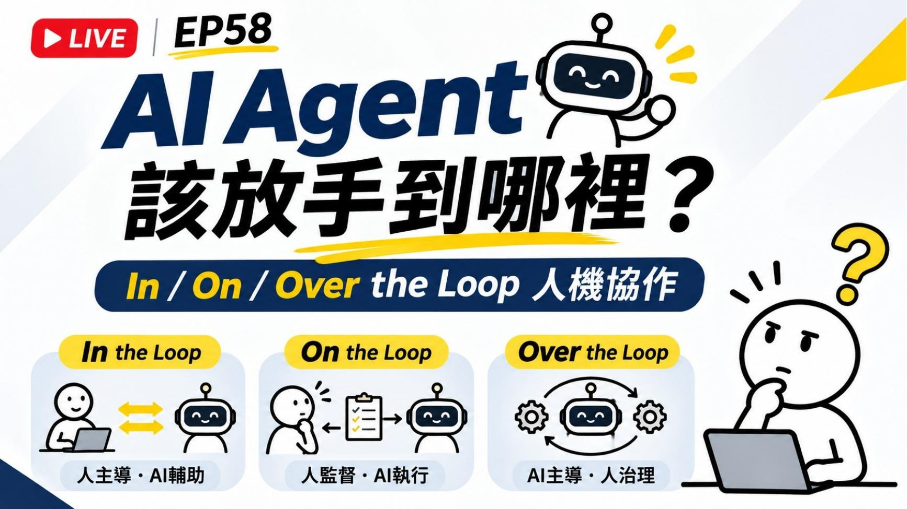
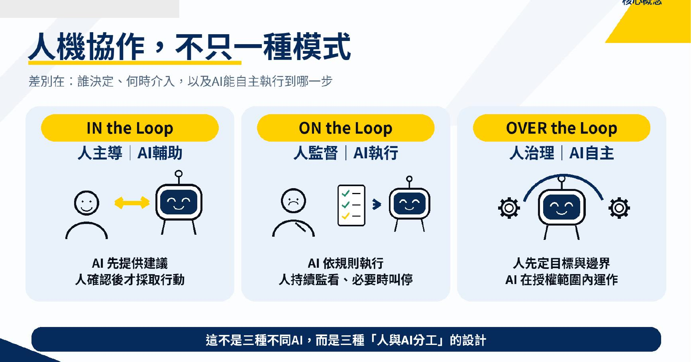
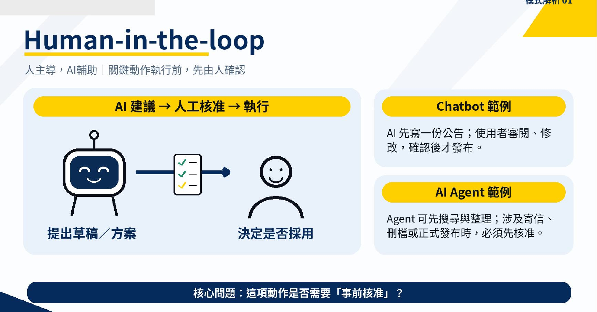
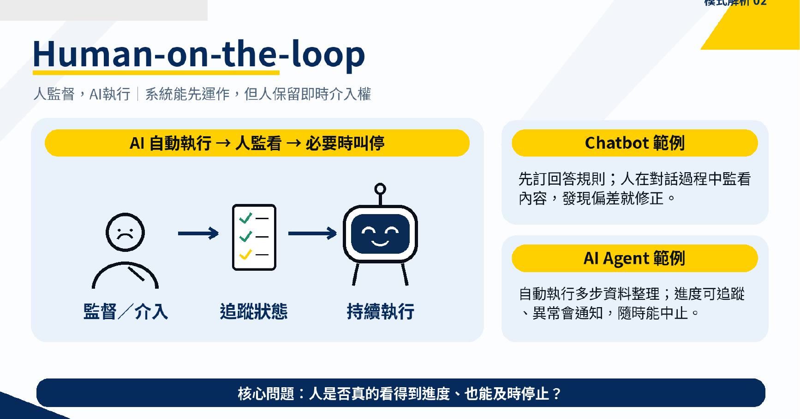
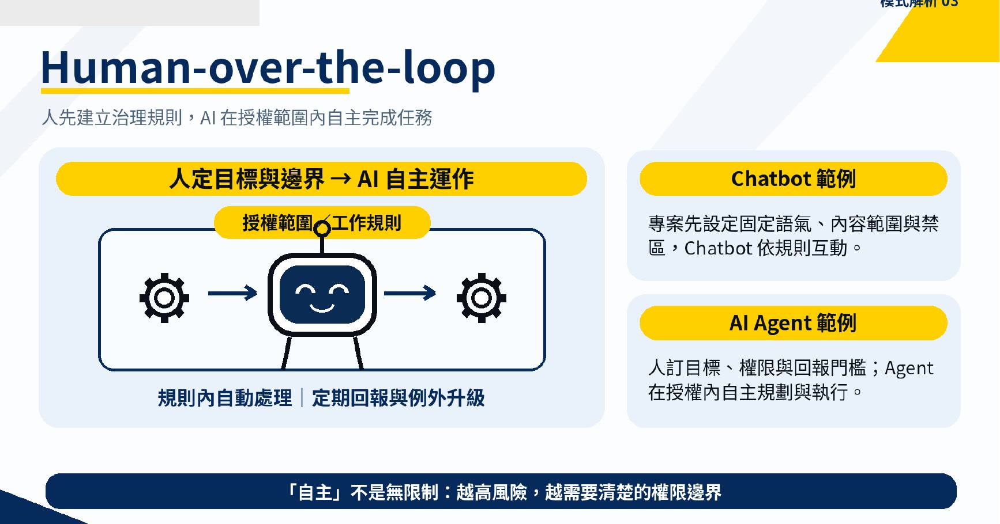
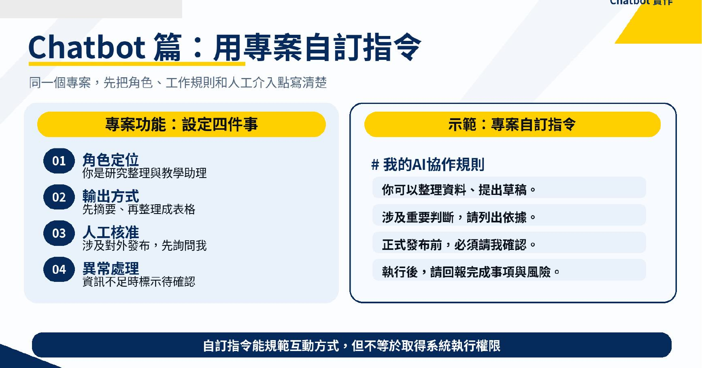
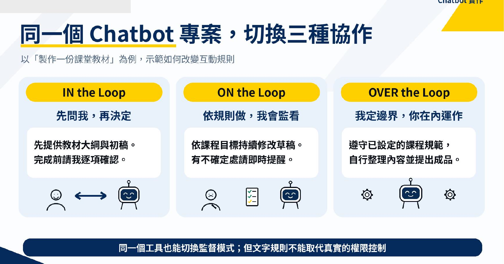
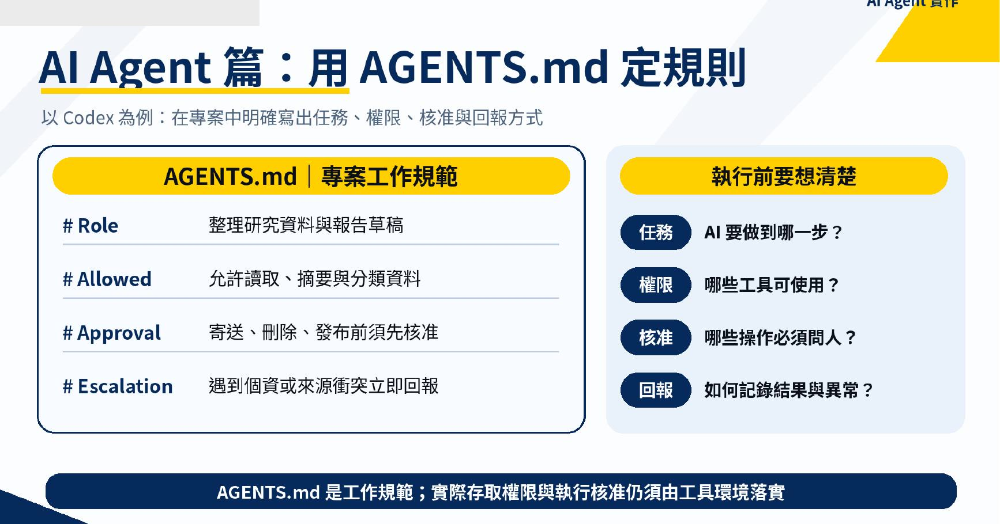
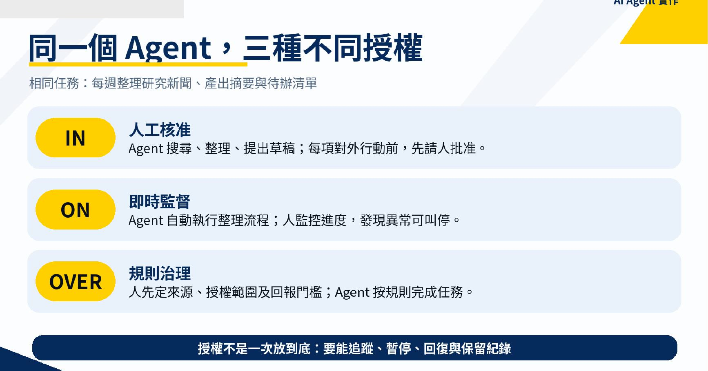
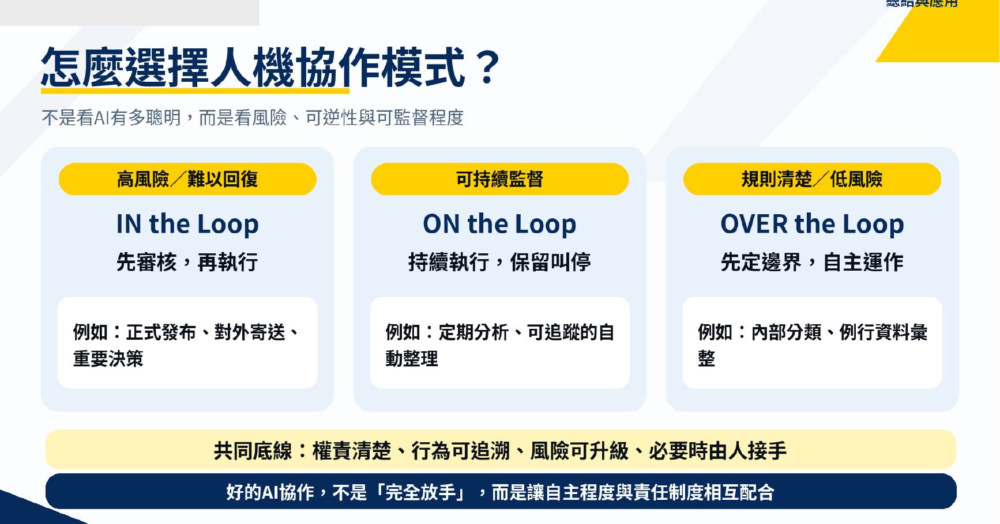

AI Agent 該放手到哪裡？
這份整合筆記把 10 頁簡報與 54 分 14 秒錄影對齊，每頁都明確區分「錄影口述」、「簡報補充」與「整合結論」，方便回看，也方便轉成自己的 Agent 規則。
01｜先問「該放手到哪裡」

錄影口述
開場把焦點放在 AI Agent 的放權程度：不是能不能自動化，而是人要在哪一個位置介入。
簡報補充
三種模式排成連續光譜：人在迴圈內、人在迴圈上監看，以及人在迴圈之上設定治理規則。
整合結論
自主性不是開或關，而是一條可逐步調整的連續線。
02｜三種模式不是三套工具

錄影口述
老師提醒，這不是追一個新的 AI 名詞，而是在同一份工作裡安排誰決定、誰執行、何時回報。
簡報補充
In 強調逐步核准，On 強調持續監看，Over 強調先定目標、邊界與升級條件。
整合結論
模式應套在「流程步驟」上，而不是替整個工具貼一個永久標籤。
03｜Human-in-the-Loop：先核准再走

錄影口述
直播用 GPT 專案與 GPU 筆電行銷稿示範，先讓 AI 提案，再由人逐步確認；老師多次提醒「不要一步登天」。
簡報補充
流程是 AI 建議 → 人類核准或修正 → 才進入下一步，適合需求仍在摸索或錯誤成本高的工作。
整合結論
第一次跑的流程與高風險節點，預設放在人在迴圈內。
04｜Human-on-the-Loop：讓它跑，但要看得見

錄影口述
當流程已跑通，示範把部分檢查點減少，改成定期回報與人在旁監看。
簡報補充
AI 可以連續執行，但人仍保有暫停、糾偏與接管權；可觀測性是這個模式的必要條件。
整合結論
真正的 On 不是放著不管，而是有進度、有警示，也能安全停止與恢復。
05｜Human-over-the-Loop：先治理，再授權

錄影口述
老師用「做完一次、寫成規矩」說明：人要先親自走過流程，才知道哪些規則可以交給 Agent。
簡報補充
人在上層定義成功標準、禁止事項與例外升級；AI 在規則範圍內自主完成。
整合結論
Over 是經過驗證後的授權，不是未驗證的全自動。
06｜用四段式指令寫清楚合作契約

錄影口述
示範把角色、工作方式、哪些步驟要問人，以及完成後怎麼回報，逐項寫進專案規則。
簡報補充
四個區塊共同決定 Agent 的行為邊界，也讓使用者知道何時會被打斷。
整合結論
文字規則是協作契約；真正的檔案、帳號與系統權限仍須由執行環境控管。
07｜同一個 Chatbot，也能切換三種模式

錄影口述
示範把已驗證的工作流程整理成規則或 Skill，再逐步把重複步驟交出去。
簡報補充
同一個專案中，探索階段可用 In，批次執行用 On，成熟且低風險的例行工作才進到 Over。
整合結論
選擇模式的單位是任務與步驟，不是模型或聊天機器人。
08｜把規則落到 AGENTS.md 與執行環境

錄影口述
課程從單一 Chatbot 移到 Agent 與多代理協作，強調每個代理要知道自己的責任、限制與交班方式。
簡報補充
規則至少包含 Role、Allowed、Approval、Escalation，才能把模糊的「幫我做完」改成可稽核的授權。
整合結論
提示詞說明意圖，執行環境與權限機制才負責真正落實限制。
09｜同一個 Agent，依風險給不同授權

錄影口述
示範由管理者分派研究、影音產製與品質檢查；共享、預覽與回報過程也顯示了實務上的接力摩擦。
簡報補充
同一個 Agent 可以在不同子任務採用 In、On 或 Over，不必一次給到最高權限。
整合結論
放權前先補齊追蹤、暫停、復原與紀錄，才有條件擴大自動化。
10｜用風險、可逆性與可監看性做選擇

錄影口述
收尾回到專案與 Agent 的實作：先整合需求、走過流程、留下規則，再決定下一次能放手多少。
簡報補充
評估三件事：出錯風險高不高、結果能不能復原、過程能不能被監看。
整合結論
高風險優先 In；可監看、可停止的工作可用 On；規則清楚且低風險、可復原時再考慮 Over。